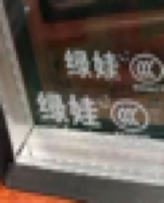
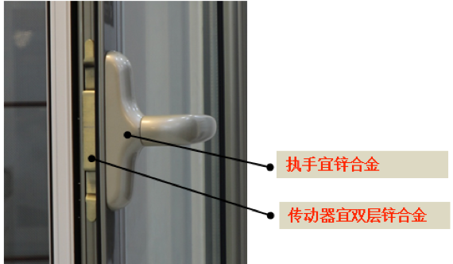
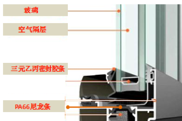

玻璃
哪些地方要采用安全玻璃？

移门应采用安全玻璃（钢化玻璃），每片玻璃角部均有CCC标志，安全玻璃破碎后不易伤人，如果预算实在紧张，也建议底部采用钢化玻璃。
面积大于1.5平的窗、7层及以上楼层外窗、距离地面小于500mm的门窗玻璃均应采用安全玻璃。
单层玻璃还是双层？
这个取决于门窗的密闭性能，平开窗宜做双层玻璃，推拉窗如果窗与框及窗扇之间交界面密封很好，则也宜做双玻，如果密闭无法保证甚至透风，没有太多必要。
LOW-E低辐射玻璃有什么优势？
比普通玻璃要冬暖夏凉，热传导慢。离线LOWE玻璃同时也是安全玻璃，而在线LOW--E就不一定是安全玻璃，取决于技术要求。
离线性能更好，价格贵10%左右，如果外窗户采光面积大且预算充足建议采用，阳光房优势更明显。 鉴别LOW-E玻璃可以用打火机看火苗，LOW-E玻璃有一个火苗颜色不同于其他，那是镀膜的作用。
五金
国标要求移门10万次推拉，窗一万次启闭。要满足这个要求，除了看型材还要看五金质量。
滑轮：滑轮不仅要留意底轮还要注意顶轮，有商家底轮好，顶轮差；
轮子一般都有专业厂家标志，内为滚珠轴承，外包尼龙（玻璃纤维增强型尼龙PA66）比较好，POM塑料次之，ABS（工程塑料）再次之，普通塑料或橡胶就更差了。
滚轮主体采用锌合金最好，与门框的连接材料宜采用304不锈钢，有些大品牌这个位置采用防锈冷轧碳钢，时间久了，难免生锈，尤其淋浴隔断处更加不合适。
纯金属轮容易摩擦出声，不推荐
POM手感虽好，但不耐高温，浴室用有一定局限，价格上也比PA66（玻璃纤维增强型尼龙）便宜。 好的滑轮几乎无振动。
轨道：一般铝合金居多，也有不锈钢。地轨高度宜低，家有老人孩子不超过5mm。
执手：宜锌合金，次铝合金。好的壁厚厚，结实，局部有加强，五金内部细腻，漆面处理到细节处。
传动器：宜锌合金，双层结构，强度足够掰不弯；差的铝合金，单层结构，很容易掰弯；高档点的上悬窗传动器用304不锈钢且可调节开启大小，低端一般固定。

定位器：好的用304不锈钢，用料足，强度高，不易变形，差的壁薄，易变形。差的用201不锈钢或贴，可以用吸铁石和不锈钢鉴别液测定。
五金品牌有哪些？
雅洁、顶固、汇泰龙、海蒂斯、百隆、海福乐、GMT、诺托、坚朗。

胶条、毛条
密封胶条：
用于玻璃和窗扇及框之间的密封。硅胶（硅橡胶）优于三元乙丙（EPDM），橡胶条最次，优劣主要体现在抗老化性能，目前使用最广的为三元乙丙，足够应付普通门窗的使用环境。好的三元乙丙无味略有芳香，触摸光滑，劣质的三元乙丙有刺鼻味，粗糙。
密封胶条品牌:
德国维盾、迪福德、海达、新安东、皇派、帝奥斯、富轩、富奥斯、帕莱德、轩尼斯、圣保罗、新豪轩、塞纳德。
毛条：
需经过硅化处理，质量合格的毛条外观为表面平直，底板和竖毛光滑、无弯曲，底板上没有麻点，符合0.2mm的规定。